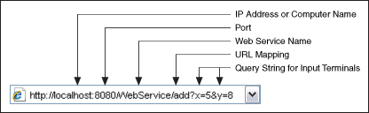

Note��For more information about concepts in this topic, refer to the Web services introduction and tutorial. LabVIEW Web services are available only in the LabVIEW Full Development System and the LabVIEW Professional Development System.
Clients use URLs and HTTP methods to transmit data directly to controls on the connector pane of HTTP method VIs, as well as to send values as POST data using the POST HTTP method. The URL that web clients use to exchange data with HTTP method VIs is built upon various values determined when you create a LabVIEW Web service. The following figure shows an example URL that a web client might use to exchange data with an HTTP method VI.

IP address or computer name�If the web client accesses the Web service from the same system that runs the host web server, use the value localhost. If the web client accesses a Web service on a remote target, use the target's IP address or system name. Use NI Web Server Configuration to customize the hostname for the NI Web Server. Use NI Web-based Configuration & Monitoring to customize the hostname for the Application Web Server.
Port�Matches the port of the host web server. NI Web Server uses 80/443 as the default port in accordance with HTTP/HTTPS protocol. However, the port number might change if another application occupies the port. You can customize the port number in NI Web Server Configuration. Application Web Server uses 8080 as the default port. You can customize the port number in NI Web-based Configuration & Monitoring.
Web service name�Matches the Service name option on the Service Settings page of the Web Service Properties dialog box.
For each HTTP method VI, LabVIEW defines a default mapping that includes the web resource to which the VI belongs, if applicable, followed by the VI name.
Query string for input terminals�Matches labels of controls assigned to the connector pane of the HTTP method VI. Append this query string to a URL mapping using the syntax in the previous illustration. For example, the query string ?x=5&y=8 passes data to controls labeled x and y on the connector pane of an HTTP method VI whose URL mapping is add. Note that you separate label-value pairs with an ampersand (&).